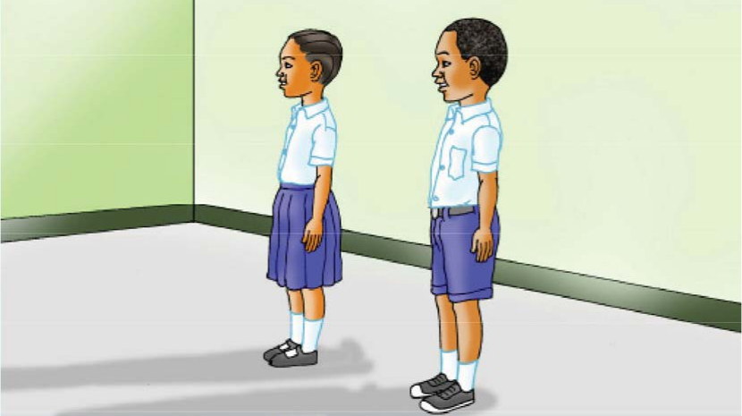
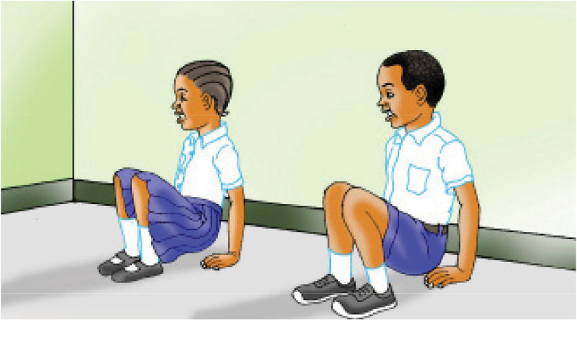
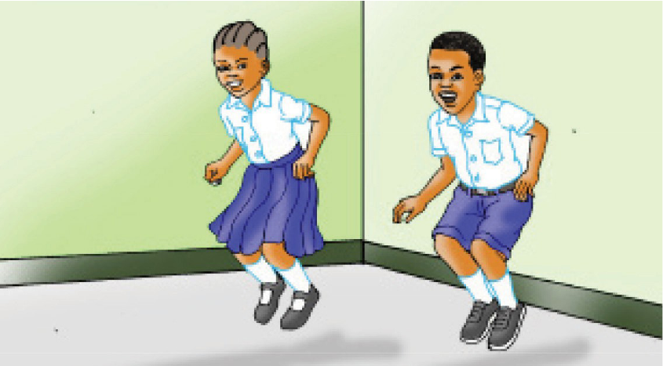
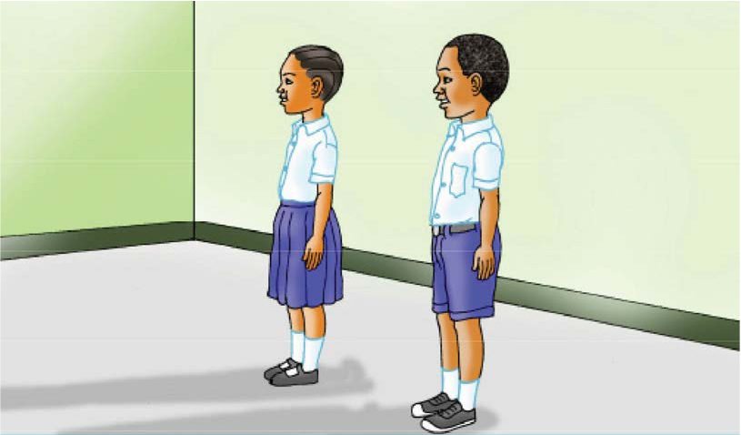

Tucheze mchezo
Mchezo wa simama kaa
Simama kaa
Wote: Simama kaa x2
Wote: Ruka, ruka, ruka
Wote: Simama kaa
Wote: Tembea kimbia
Wote: Tembeaa
Wote: Tembea kimbia
Wote: Tembea kimbia
Wote: Kimbiaa
Wote: Tembea kimbia
Jinsi ya kucheza mchezo wa simama kaa




- Imba “tembea” wakati unatembea.
- Imba “kimbia” wakati unakimbia.
Shughuli ya kufanya 2
Cheza mchezo wa simama kaa.